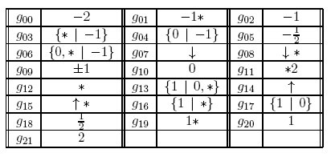
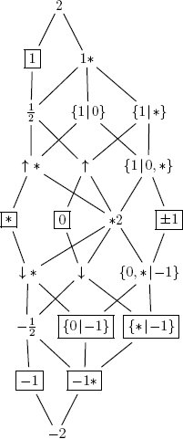

LatticeMaker is a software that produces and displays the lattice of games born at the nth day of a initially given set of combinatorial games. LatticeMaker uses the output generated by cgsuite to produce pstricks files containing the lattice description (after a transitive reduction) so that it can be easily included in latex documents.
Here is an example (the second day of set {0}):
You need to previously install
Then download LatticeMaker (current version 1.4.1), unzip it and read file README.txt.
To define what initial set of games and how many days we want to produce, edit 'latticeMaker.cgs' (a cgsuite script file) and go to its end where you will find these lines:
games = [0];
d1 = nextDay(games);
d2 = nextDay(d1) >> out;
makeDot(d2) >> out;
There are two main functions, nextDay() and makeDot(). Function nextDay() computes and returns the next day of a given game set. Function makeDot() returns a list of pairs of games (g1,g2) where g1<g2 (but you don't need to know these details). The previous example produces the 2nd day of set {0} (in cgsuite the set is represent by a list; notice that, syntactically, games are separated by commas, e.g., [0,*,-1/2,{1|0},v]).
So, in this file you need to:
Then execute batch run.bat (or run.sh for unix/linux systems). This batch creates the next latex files:
The zip file also includes a latex file, doc.tex, with a sample latex code showing how to embed these results in your document.
The lattice shown above but in the short labels version:

And the respective caption:

The lattice marked with its irreducible elements:

Alda Carvalho, Carlos Pereira dos Santos, Cátia Lente Dias, Francisco Coelho, João Pedro Neto, Sandra Vinagre.
LatticeMaker is licensed under a
Creative Commons Attribution-ShareAlike 3.0 Unported License.
webpage maintained by
João Pedro Neto
Apr 9, 2012